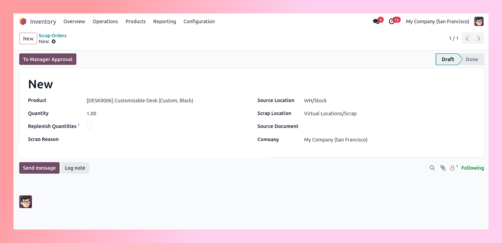
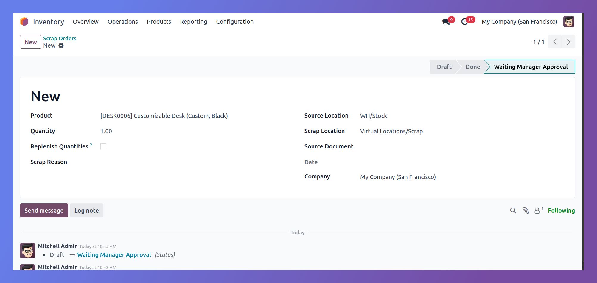
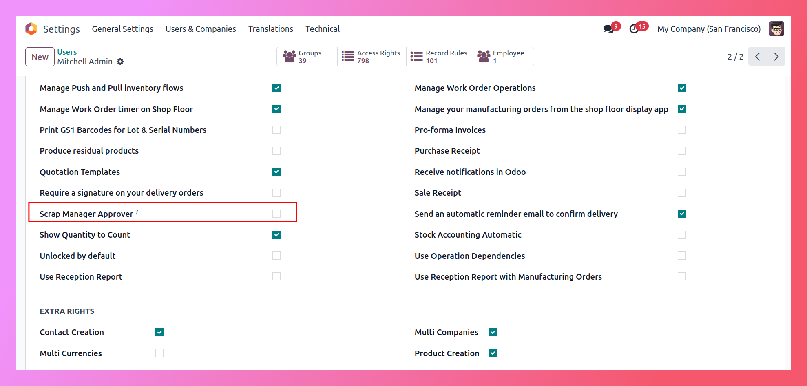
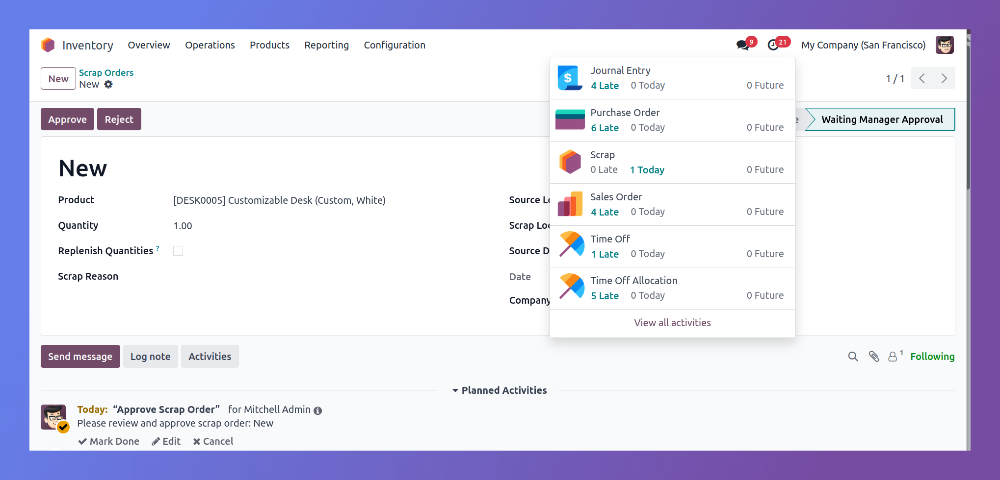
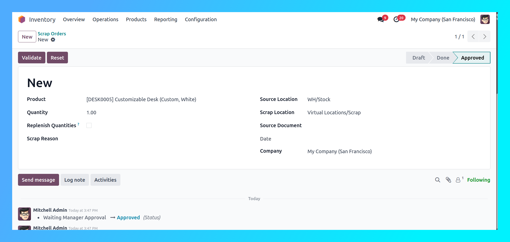

Initiate the approval process with a single click on "To Manager Approval" button, which changes the scrap order state to "Waiting Manager Approval".
Only users with "Scrap Manager Approver" permission enabled in their user settings can approve scrap orders, ensuring proper authorization control.
Managers receive automatic activities/notifications for pending scrap approvals. Directly approve or reject from the activity feed with a single click.
Track every approval action with timestamps, user information, and approval/rejection reasons. Full history of state changes from draft to final decision.
Easy workflow reset with dedicated "Reset to Draft" button. Allows corrections and re-submissions when needed without creating new records.
Scrap orders cannot be validated without manager approval. The Validate button only becomes visible to authorized approvers after approval is granted.
This module implements a comprehensive multi-step approval workflow for Odoo's scrap management system. After installation, scrap orders follow a structured approval process to ensure proper oversight and control over inventory write-offs.
Workflow Overview:
User creates scrap order and clicks "To Manager Approval" button, changing state to "Waiting Manager Approval"
Automatic activity creation notifies designated managers. Approval request appears in their activity feed for immediate review.
Manager with "Scrap Manager Approver" permission reviews the scrap order and can Approve, Reject, or Reset to Draft directly from the activity or scrap form.
Upon approval, Validate button becomes visible for authorized users to complete the scrap process. All actions are logged in the audit trail with timestamps.
The approval system is strictly role-based – only users explicitly granted approver rights in their user settings can see and use the approval/validation buttons. This ensures proper oversight while maintaining efficient workflow for authorized personnel.
Key Benefits: Prevents unauthorized inventory write-offs, maintains clear audit trails, enables quick approval/rejection decisions, and provides flexibility with reset-to-draft functionality when corrections are needed.
Enable the approval workflow from Accounting Settings and define the Threshold Amount. When activated, the standard Post button is hidden and replaced by Request Approval, enforcing mandatory validation chains before any invoice or refund can be posted.

Assign users to specific approval groups: Support Approver, Accounting Approver, General Approver, Payment Validator 1, and Payment Validator 2. Each group carries distinct authorization limits enforced at the code level.

In draft state, users must click Request Approval to submit documents for validation. The system evaluates document type and amount to determine routing: vendor bills go to Payment Validators, while customer invoices and refunds route based on the threshold setting.

Documents automatically route to appropriate approvers based on value. Amounts below threshold await Support or Accounting approval, while high-value documents require General Manager authorization. Approve and Reject buttons appear only for authorized users.

Vendor bills follow a dedicated chain through Payment Validator 1 then Payment Validator 2. Validator 1 forwards the bill, Validator 2 performs final authorization. Upon final approval, the system automatically posts the bill and creates journal entries.

Unauthorized users attempting to approve receive immediate ValidationError messages. Authorized approvers see contextual Approve and Reject buttons. Clicking Reject instantly returns the document to draft state for corrections.
When a scrap order enters "Waiting Manager Approval" state, the module automatically creates a "To Do" activity for designated approvers.
Extends Odoo's native Stock/Inventory module with approval workflow - no complex setup or additional screens required.
Approvers can see all pending scrap approvals directly from the Activities menu and access scrap orders with one click.
Clicking the activity notification takes approvers directly to the scrap order requiring review, eliminating navigation delays.
Activities are automatically cleared when scrap orders are approved, rejected, or reset to draft, keeping the activity feed clean.
Notifications are sent only to users with "Scrap Manager Approver" permission, ensuring proper authorization control.
The module prevents unauthorized inventory write-offs by enforcing mandatory managerial approval before scrap validation. Complete audit trail tracking ensures accountability for all approval decisions.
Take control of your inventory write-offs with a simple yet effective approval workflow. Prevent unauthorized scrap operations by requiring manager approval before validation. With just one click, scrap orders enter approval queue, and only designated approvers can proceed with validation. Install now to add an essential layer of control and accountability to your scrap management process.
Go to User Settings and enable the "Scrap Manager Approver" checkbox for the users who should have approval rights. Only these users will see the Validate button on scrap orders.
The scrap order changes state from "Draft" to "Waiting Manager Approval". It remains in this state until a user with approver rights reviews and approves it for validation.
No. The module enforces that scrap orders must go through the approval process. The Validate button is only visible to users with "Scrap Manager Approver" permission enabled.
Scrap orders will remain in "Waiting Manager Approval" state indefinitely until at least one user is granted approver rights. The system administrator must enable the permission for appropriate users.
It enhances the workflow by adding a mandatory approval step before validation. The core scrap functionality remains unchanged, but now requires manager approval for accountability.
Our dedicated support team is here to help you with installation, configuration, and any questions you may have about the Scrap Approval Management.
| hello@code-experts.co |
+973 1722 4488
|
WhatsApp: +973 1722 4488
|
www.code-experts.co
|
© 2026 Code Experts IT Solutions. All Rights Reserved.